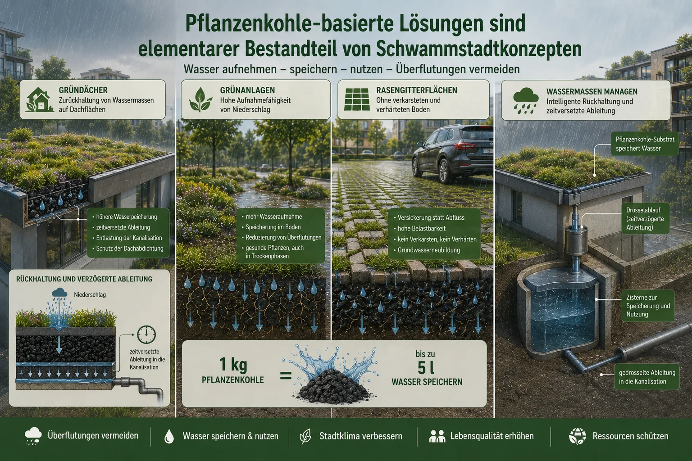
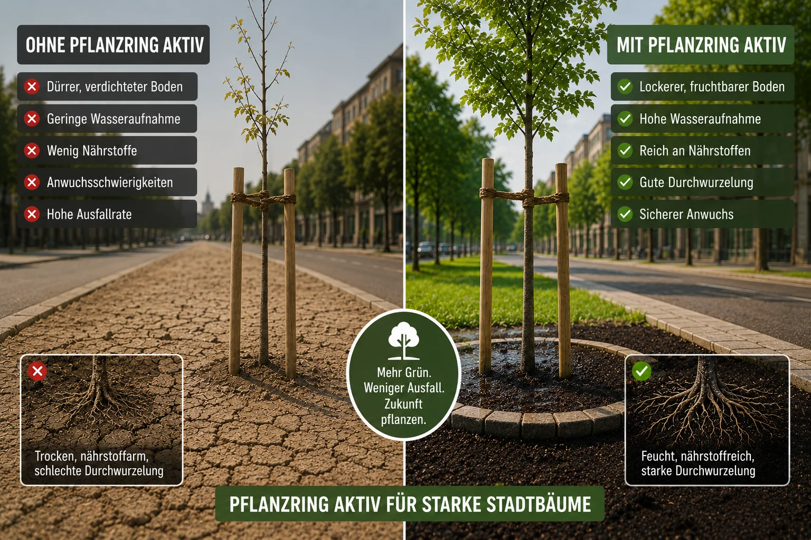
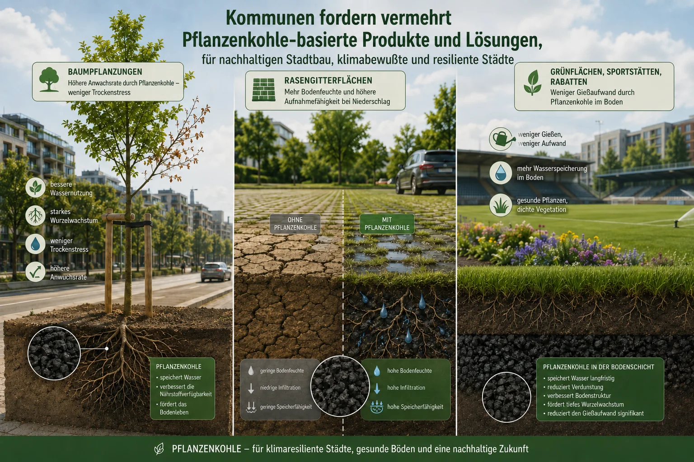
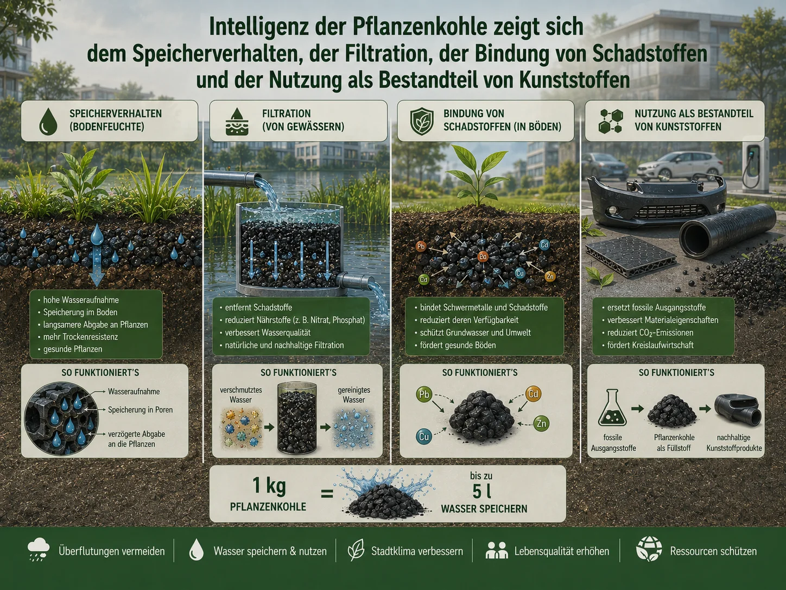
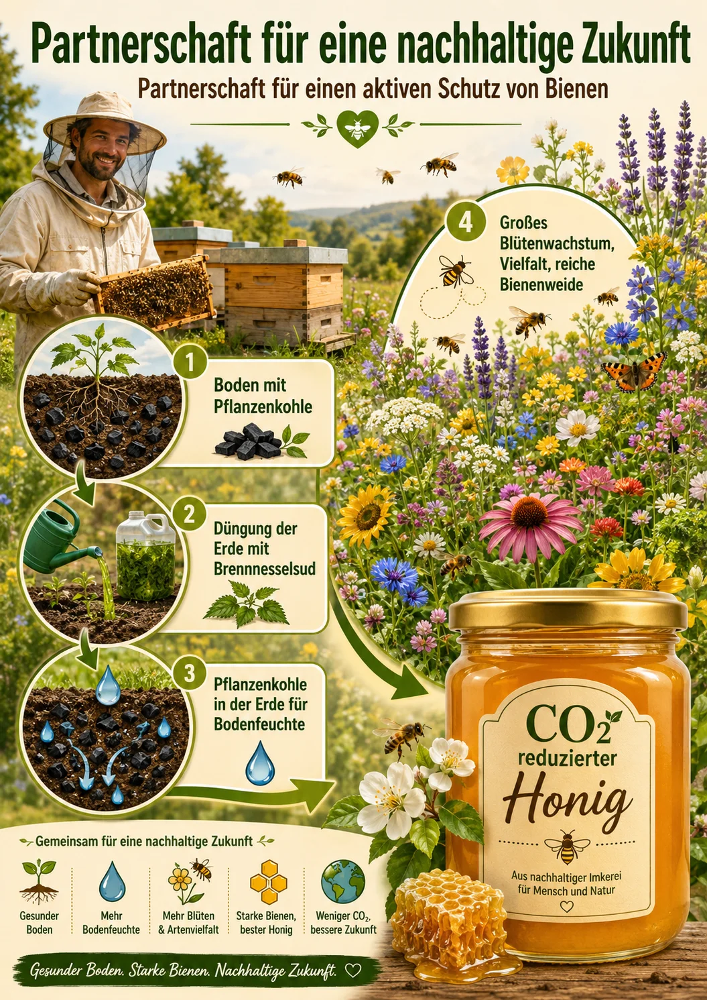
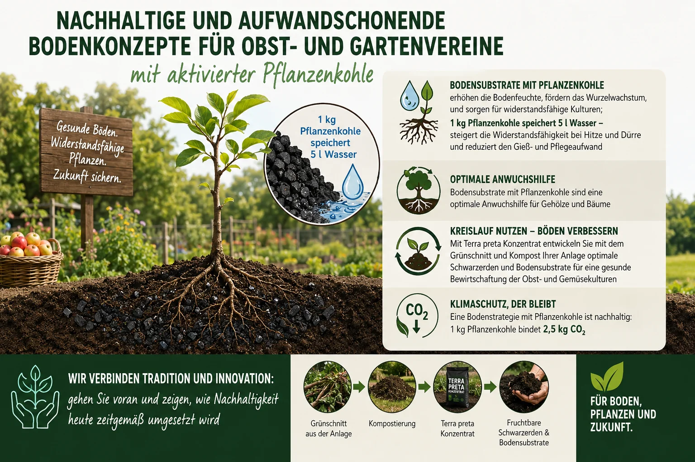
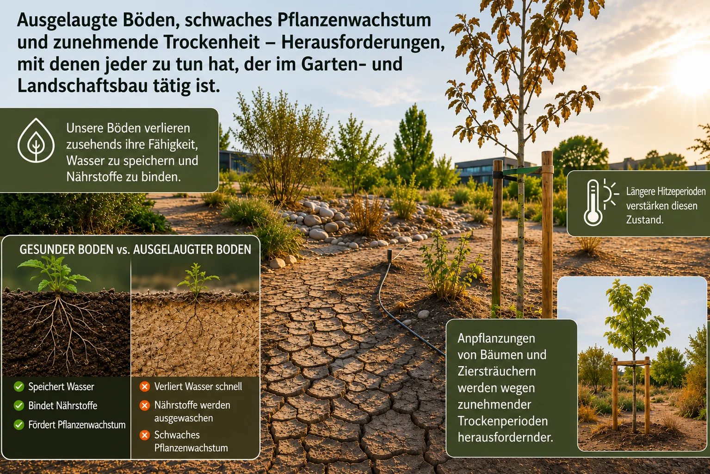
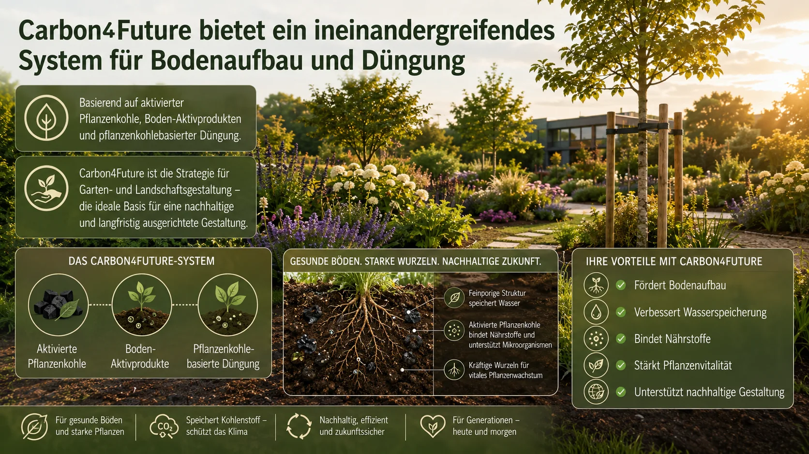
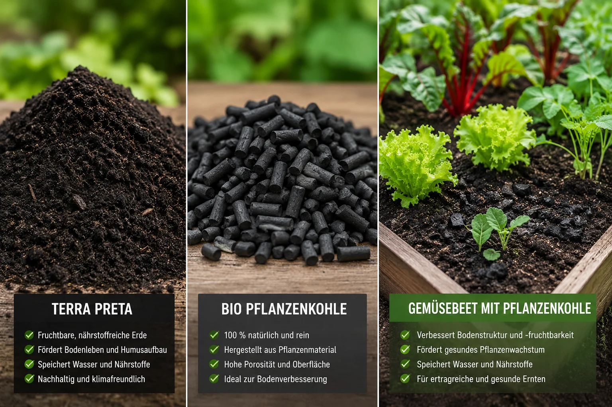

Pflanzenkohle als Baustein für ein Schwammstadtkonzept

// Infografik-Galerie
Aktivierte Pflanzenkohle wirkt überall dort, wo Boden, Wasser und Wachstum eine Rolle spielen. Klick dich durch die Bereiche – für jeden gibt es eine eigene Infografik.









Wir entwickeln laufend neue Anwendungen mit aktivierter Pflanzenkohle für spezielle Anforderungen und Aufgabenstellungen. Schreib uns kurz, was du planst – wir prüfen, was passt.
Beratung anfragen →